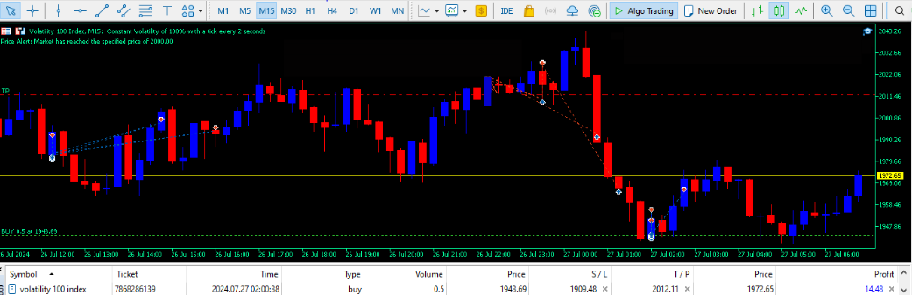

The Monster EA - Version 3.0
Have you ever wanted an EA that follows the market price wherever it goes and trades wisely when opportunities arise? Or a completely flexible EA that is both reliable and profitable? Welcome to The Monster EA Version 3.0 - The Best Expert Advisor!

Works on Any ECN Broker and PROP FIRMS
Key Features
Risk Management
Easily set your risk per trade and take profit levels in the input fields, and let the EA handle the rest.
Stop Loss Trailing
Secure your profits as the price moves in your favor with adjustable trailing stop loss settings.
Unique Serial Keys
Comes with 20 unique serial keys for authentication. You will receive these keys after purchase on MQL5.
Patience and Precision
Automatically closes all trades in profit before the market turns.
Enters new trades wisely, ensuring optimal performance in overbought or oversold conditions.
Parameters
Fixed Lot Size
Set your preferred lot size per trade (default: 0.1).
Trailing Stop Loss
Define the trailing stop loss in pips (default: 5 pips).
Account Risk Percentage
Specify the percentage of your account balance to risk per trade, perfect for use with dynamic lot sizing.
Max Trades
Limit the number of trades the EA can open simultaneously (default: 30).
Risk Amount Per Trade
Define the exact amount of money to risk per trade.
Profit Threshold
Automatically close all trades when a specified profit target is reached or when the market is deemed overbought or oversold.
Price Alert
Set a market price at which you’d like to be notified by The Monster EA.
How to Use The Monster EA
Once you have purchased The Monster EA , you will have the option to easily download the EA and start using it right away. Even much great, The Monster EA only needs to be attached once and you can even close your Device, No need to be on the Charts 24/7.
Let the Monster do that and when the opportunity arises, just look, Literally.
- After downloading The Monster EA, get your serial keys which were sent to you on WhatsApp or Email after buying the EA. The serial keys are sent immediately after the purchase.
- Next, head over to your MetaTrader 5 to install The Monster EA.
- Locate The Monster EA file you downloaded on your device, then copy or move the file to MQL5 Folder.
Open the MetaTrader 5 trading terminal on your device and click on "File" (Top Left corner of your screen) to open the MQL5 folder.
Once in the MQL5 folder, click on "MQL5", then "Experts", and lastly "Advisors".
Paste the file in the "Advisors" folder.
- After that, close the file manager and return to MetaTrader 5. Click on "Tools" and enable Algo Trading.
- Drag and drop The Monster EA onto the chart. This will prompt you to enter the parameters as discussed above.
- I am always available to offer help regarding The Monster EA! Cudos to yourself, I wish you the best The Monster EA 3.0 has to offer!